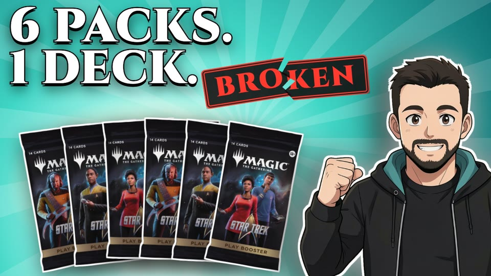
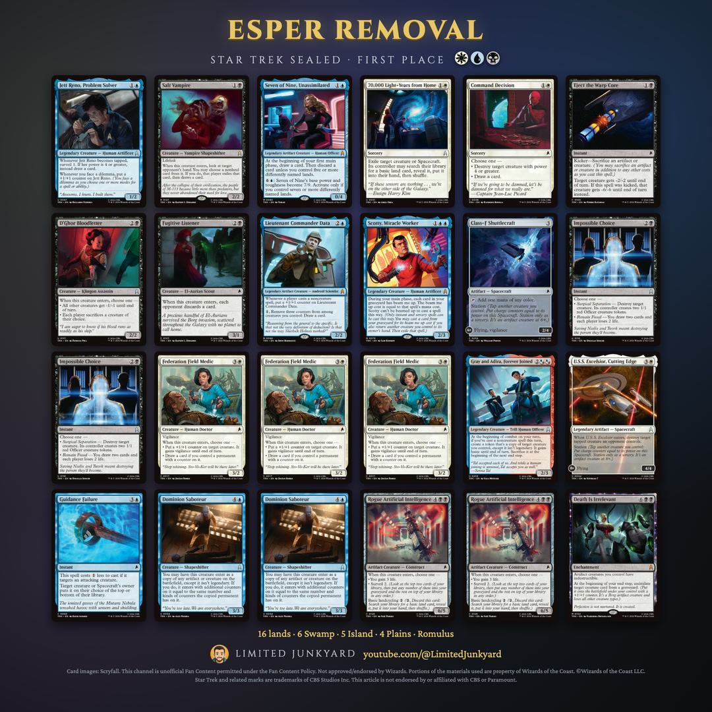
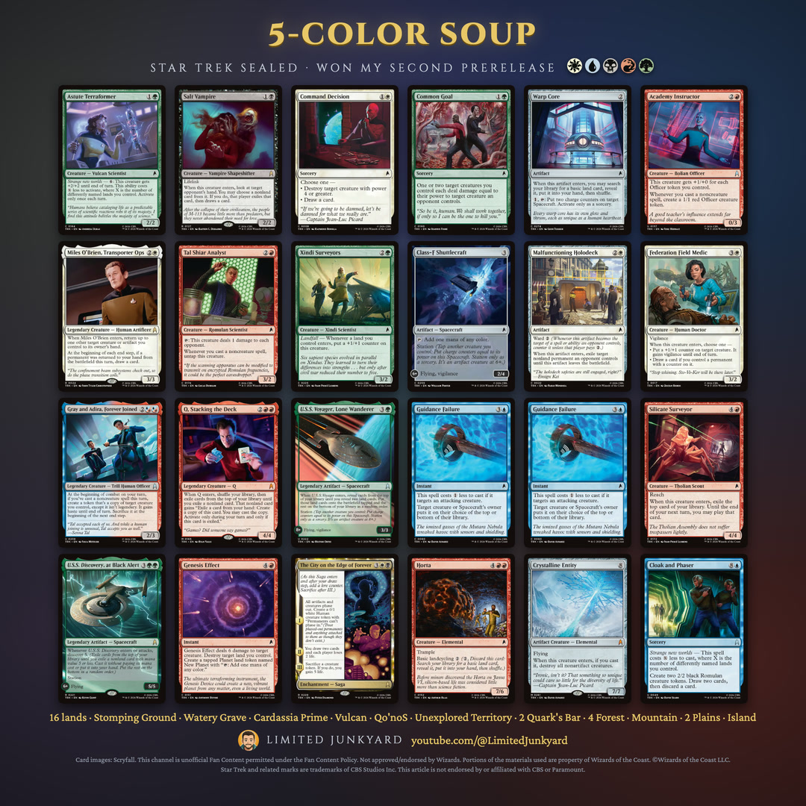
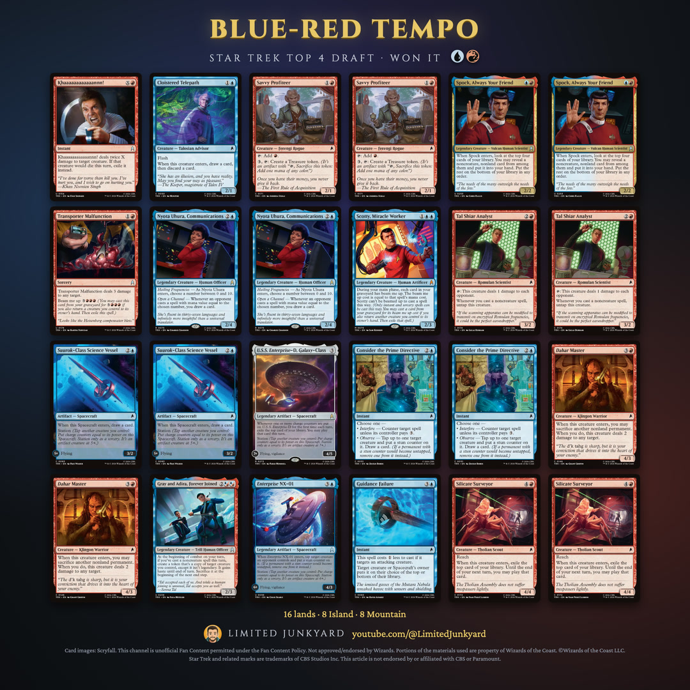

Watch the guidePrerelease guides
Cheat sheets and card ratings from the videos.
Winning decks
The decks I played, card by card, and why they won.

First prerelease · 1st place
Esper Removal
The Esper Star Trek sealed deck that took first place at my first prerelease: the decklist, eight removal spells, the card draw, and the mythic that kept bringing a sacrifice back.
Read the deck →
Second prerelease · 1st place
5-Color Soup
The five-color Star Trek sealed deck that won my second prerelease: the decklist, the fixing that made five colors work, and the cards that carried it.
Read the deck →
Second prerelease · Top 4 · won
Blue-Red Tempo
The blue-red Star Trek deck I drafted in the Top 4 and won the tournament with: the decklist, the Spock copy engine, the card draw and the flying Spacecraft that close games.
Read the deck →